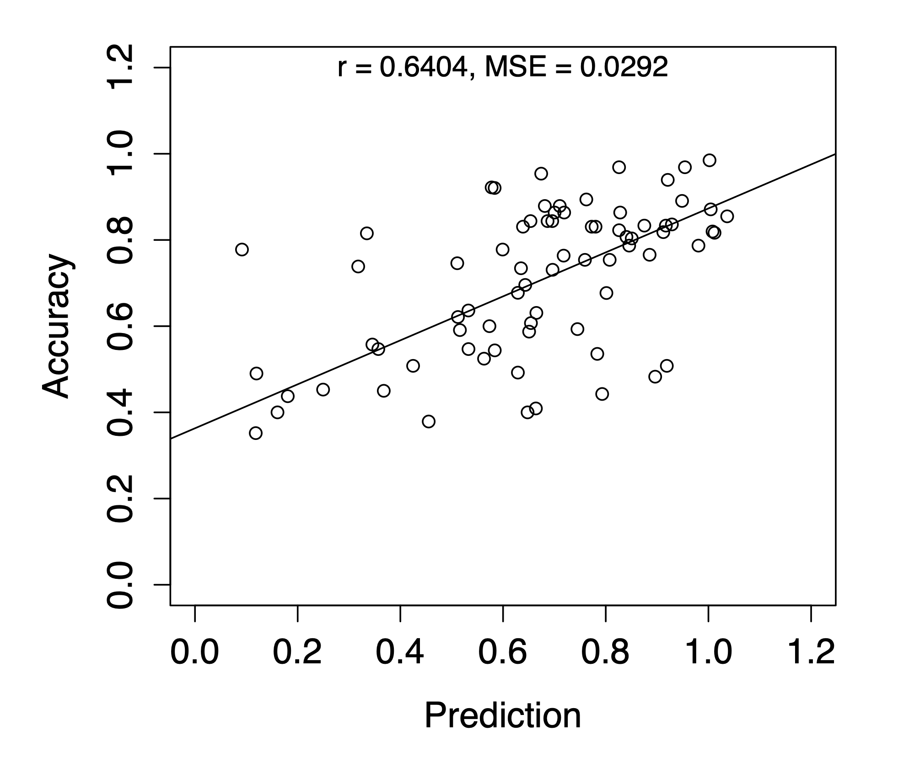

Information processing in the brain
Visual processing, memory retrieval, decision making are hidden cognitive processes that are not directly observable from behavioral responses. I develop machine learning methods that allow us to track when and where these hidden cognitive process occurs in the brain, using a combination of neural imaging techniques (EEG, MEG, ECoG).
- Zhang, Q., Walsh, M.M., & Anderson, J.R. (2018). The Impact of Inserting an Additional Mental Process. Computational Brain & Behavior. [link] [pdf]
- Zhang, Q., van Vugt, M., Borst, J.P., & Anderson, J.R. (2018). Mapping Working Memory Retrieval in Space and in Time: A Combined Electroencephalography and Electrocorticography Approach. NeuroImage. [link] [author manuscript]
- Anderson, J.R., Zhang, Q., Borst, J.P.,& Walsh, M.M. (2016). The Discovery of Processing Stages: Extension of Sternberg's Method. Psychological Review, 123(5), 481. [link] [author manuscript]
- Zhang, Q., Borst, J.P., Kass, R.E.,& Anderson, J.R. (2017). Inter-Subject Alignment of MEG Datasets in a Common Representational Space. Human Brain Mapping. [link] [author manuscript]
- Zhang, Q., Walsh, M.M.,& Anderson, J.R. (2017). The Effects of Probe Similarity on Retrieval and Comparison Processes in Associative Recognition. Journal of Cognitive Neuroscience, 29(2), 352-367. [link] [author manuscript]

Neural markers of task performance
I develop methods to identify brain patterns in participants that are predictive of their later performance in the task, and brain patterns that can be used to further improve task performance in Brain-Computer Interface.
-

- Mousavi, M., Koerner, A.S., Zhang, Q., Noh, E.,& de Sa, V.R. (2017). Improving Motor Imagery BCI with User Response to Feedback. Brain-Computer Interfaces, 4(1-2), 74-86.[link] [author manuscript]
- Zhang, Q., Anderson, J.R., & Kass, R.E. (2015). Consistency in Brain Activation Predicts Success in Transfer. Proceedings of the 37th Annual Conference of the Cognitive Science Society. [pdf]
- Zhang, Q., Anderson, J.R., & Kass, R.E. (2014). Consistency in Extending Problem-solving Procedures Indicates Expertise. Master's thesis report. [pdf]
- Koerner, A.S., Zhang, Q., & de Sa, V.R. (2013). The effect of real-time positive and negative feedback on motor imagery performance. Proceedings of the Fifth International Brain-Computer Interface Meeting: Defining the Future. [pdf]